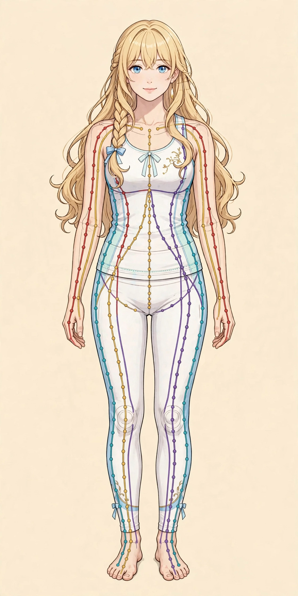
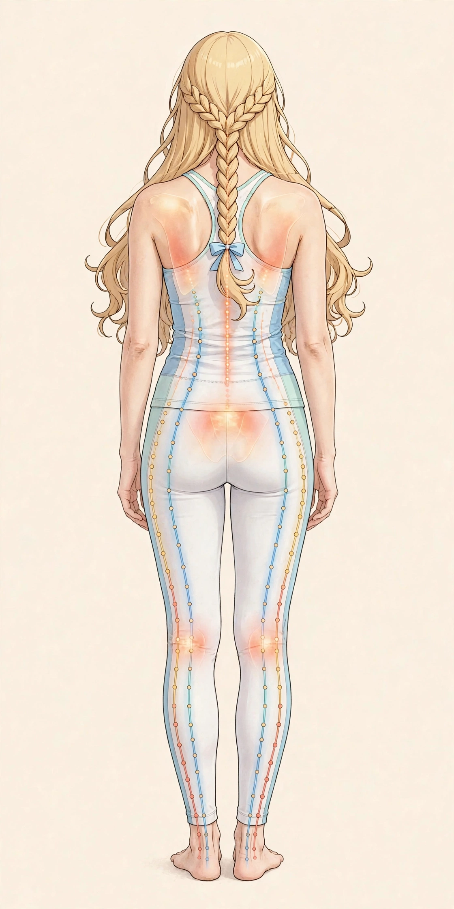

新着チェックAromatherapyアロマテラピー
精油の基礎
精油の基礎
本 ｜ アロマ・精油
香りの基礎を学ぶ本を探す
精油のプロフィールやブレンドの考え方を、図解で学べる入門書・図鑑のジャンルです。初めての一冊にも、学び直しにも。
選び方のポイント：精油ごとの注意事項や成分の説明があるか、写真や図が多いかを確認すると使いやすい一冊に出会えます。
シャワーも利用できる女性専用サロン。オイルマッサージと美容整体を組み合わせ、仕事帰りの体を丁寧にほぐします。
施術は男性セラピストが担当します

ステラシリウスは、姉妹店ステラポラリス（梅田）と同じ設計思想で生まれた、難波の女性専用サロンです。

鍼灸師として30年、体を見続けてきた経験から生まれた施術です。経絡（けいらく）の流れに沿ってオイルで深くほぐし、美容整体で骨格と筋肉のバランスを整えます。「その場しのぎではない、翌日が軽い体」を目指します。

ステラシリウス（難波）は、シャワー設備のあるレンタルサロンを厳選して使用しています。お仕事帰りに汗を流してから施術を受けることも、施術後にオイルを洗い流してさっぱりとお帰りになることもできます。
施術で大切にしている、経絡の流れと姿勢の指標を図でご紹介します。


症状のキーワードから体を読み解くのが、東洋医学の得意分野です。長年の不調もご相談ください。
気になる症状ごとに、要因の考え方や日常のセルフケア、医療機関への受診の目安を整理した読み物です。原因や効果を断定するものではありませんので、判断の材料の一つとしてお読みください。
天気が変わる頃になると頭が重く感じる、こめかみや後頭部が気になる。季節の変わり目に感じやすい頭痛の一般的な解説と考えられる要因、日常で取り入れやすいセルフケア、受診の目安を整理しました。
鏡や写真で背中の丸みが気になる、座っているとつい前かがみになる。姿勢・猫背の考えられる要因と、座り方・立ち方を見直すポイント、日常で取り入れやすいセルフケア、受診の目安を整理しました。
一日パソコンに向かったあと、肩の重さや首・背中の張りが気になる。デスクワーク後に感じやすい肩こりの要因の考え方と、仕事の合間や帰宅後に取り入れやすいセルフケア、受診の目安を整理しました。
布団に入ってもなかなか眠れない、眠りが浅くて翌朝すっきりしない。寝つきや眠りの浅さの考えられる要因と、夜の時間に取り入れやすい過ごし方、受診の目安を整理しました。
一日の終わりに目の奥が重い、画面の文字がかすんで見える。眼精疲労の要因の考え方と、仕事の合間や帰宅後に取り入れやすいセルフケア、受診の目安を整理しました。
座りっぱなしの日の夕方に感じる腰の重さや張り。考えられる要因の例と、日常で取り入れやすいセルフケア、先に医療機関へ相談したい目安を整理しました。
夕方になると靴がきつい、足先が冷える。むくみと冷えの要因の考え方と、帰宅後の夜の時間にできるセルフケア、受診の目安をまとめました。
サロンの学びと、ご自宅でのセルフケアに役立つ本と道具をテーマごとにご紹介します。新刊・改訂版のチェックや季節のおすすめは、随時このコーナーで更新します。
更新日：2026年10月30日
PR表記：このコーナーにはAmazonアソシエイトのリンクが含まれます。価格・在庫・仕様はリンク先のAmazonのページでご確認ください。効能をうたうものではなく、選び方の参考としてご紹介しています。
アロマ、東洋医学、姿勢とセルフケア——施術の土台になるテーマから、今読みたい本の探し方をご案内します。各ボタンからAmazonの検索結果で、新刊・改訂版を含む最新のラインアップを確認できます。
本 ｜ アロマ・精油
精油のプロフィールやブレンドの考え方を、図解で学べる入門書・図鑑のジャンルです。初めての一冊にも、学び直しにも。
選び方のポイント：精油ごとの注意事項や成分の説明があるか、写真や図が多いかを確認すると使いやすい一冊に出会えます。
本 ｜ 東洋医学・経絡
経絡の流れや経穴（ツボ）の位置を、体の図とあわせて学べるジャンルです。コラムの「経絡と姿勢の見方」とあわせてどうぞ。
選び方のポイント：全身図が大きく、経穴の位置が部位ごとに分かれているものは、日常のセルフケアにも参照しやすいです。
本 ｜ 姿勢・セルフケア
肩こり・腰の重さ・脚のむくみなど、日常のケアをテーマにした本のジャンルです。セルフケア資料ライブラリとあわせてご活用ください。
選び方のポイント：1回の動きが短時間ででき、写真つきで手順が追えるものは、無理なく続けやすいです。痛みがあるときは無理をしないでください。
ご自宅でのケアや、香りのある夜の時間に取り入れやすい道具のジャンルです。サイズや素材、使い方の注意書きを確認してから選ぶのがおすすめです。
商品 ｜ オイル・ケア用品
セルフマッサージや保湿ケアに使われる、植物由来のキャリアオイルのジャンルです。ホホバ、スイートアーモンドなどが定番です。
選び方のポイント：容量と遮光容器かどうか、開封後の使用期限の目安を確認してください。初めて使うときは少量から試してください。
商品 ｜ アロマ雑貨
寝る前の時間や読書の時間に、香りをそっと楽しむためのディフューザーやアロマストーンのジャンルです。
選び方のポイント：使う部屋の広さに合うタイプか、お手入れのしやすさを確認してください。火を使うタイプは取り扱いにご注意ください。
商品 ｜ セルフケア用品
背中や脚まわりのセルフケアに使われる、フォームローラーやストレッチボールのジャンルです。
選び方のポイント：硬さとサイズが体に合うかを確認してください。強い痛みを感じる使い方は避け、気持ちよい範囲で使ってください。
このコーナーは、サロンのテーマに合う本と商品の「探し方」をご紹介するものです。特定の商品の効果を保証するものではありません。気になる症状がある場合は、セルフケアより先に医療機関へご相談ください。
肩こり・腰の重さ・脚のむくみなど、症状別のセルフケア資料をまとめた「セルフケア資料ライブラリ」を無料で公開しています。ご自宅でできるケアのヒントとして、どなたでも無料でお読みいただけます。
また、ご自身の姿勢の状態を知る「無料姿勢チェック」のお申込も、資料ライブラリから行えます。施術の合間のセルフケアに、ぜひご活用ください。
場所は予約確定後にご案内します。体調やお悩みをうかがい、当日の施術を組み立てます。
ご希望の方は施術前にシャワーで汗を流し、施術着にお着替えいただきます。
骨盤・背骨・肩甲骨まわりのバランスを整え、オイルが巡りやすい体へ。
経絡の流れに沿って全身を深くほぐします。タオルで丁寧に覆い、露出を最小限に保ちます。
施術後のシャワーでオイルを洗い流し、ゆっくりとお支度いただけます。
体の状態とセルフケアのポイントをお伝えします。無理な勧誘は一切ありません。
施術歴30年 ・ 男性セラピスト
施術歴30年。鍼灸師（国家資格）としての臨床経験を土台に、オイルマッサージと美容整体を組み合わせた施術を行っています。東洋医学の「体はつながっている」という考え方を大切にし、痛い場所だけではなく、巡り全体から不調の理由を探ります。
当サロンは男性セラピストが施術を担当します。その点を明記したうえで、タオルワークの徹底、完全個室、健全な施術のみの提供をお約束します。初めての方も安心してお越しください。
セラピストとして一緒に働きたい方へ
難波エリアの、シャワー設備のあるレンタルサロンで営業しています。詳しい場所はご予約確定後にご案内します。
| 店名 | ステラシリウス（Stella Sirius）難波 |
|---|---|
| エリア | 大阪市・難波エリア（なんば駅／日本橋駅 近辺のレンタルサロン） |
| 営業時間 | 月〜土 17:00〜22:00（日曜休み） |
| 予約 | 完全予約制・女性専用 |
| 設備 | 完全個室／シャワー完備 |
| 料金 | 90分 10,000円（税込） |
| 施術内容 | オイルマッサージ・美容整体（鍼灸施術は行いません） |
ご利用前によくいただくご質問をまとめました。
ステラシリウスは近日開院予定のため、ご予約の受付はまだ開始していません。受付開始の際は、このページでご案内します。
ご来店・カウンセリングのあと、ご希望の方はシャワーで汗を流し、施術着にお着替えいただきます。美容整体で体のバランスを整えてから、オイルマッサージで全身をほぐします。施術後はシャワーでオイルを洗い流してゆっくりお支度いただき、最後にアフターカウンセリングで体の状態とセルフケアのポイントをお伝えします。
カウンセリングで当日のお悩みや体の状態をうかがい、それに合わせて施術内容を組み立てます。施術中も、強さが合わないと感じたら遠慮なくお声がけください。
特にお持ちいただくものはありません。お仕事帰りやお買い物の途中でも、手ぶらでお越しいただけます。メイクに関するご案内など、詳細は開院のご案内とあわせてこのページでお知らせします。
いつもの服装でお越しください。施術の際は、ご用意している施術着にお着替えいただきます。お仕事帰りの服装のままでも、手ぶらでお越しいただけます。
はい。ステラシリウス（難波）はシャワー設備のあるサロンを使用しています。施術前・施術後にご利用いただけます。タオルは一人ごとに交換しています。
コースはオイルマッサージ＋美容整体の90分コースのみで、料金は10,000円（税込）です。追加料金のかかるオプション販売は行いません。お支払い方法の詳細は、開院のご案内とあわせてこのページでお知らせします。
大阪・難波エリア（なんば駅・日本橋駅の近辺）の、シャワー設備のあるレンタルサロンで営業しています。プライバシーと安全のため、詳しい住所と入室方法はご予約確定後にご案内します。
変更・キャンセルの可否や条件など、詳細は開院のご案内とあわせてこのページでお知らせします。
分かり次第、お早めにご連絡ください。営業時間は月〜土17:00〜22:00（日曜休み）で、レンタルサロンでの営業のため、到着時刻によっては当日のご案内が難しい場合があります。
施術は男性セラピストが担当します。その分、タオルで丁寧に覆うタオルワーク、完全個室、健全な施術のみの提供を徹底しています。国家資格を持つ施術歴30年のセラピストですので、安心してお任せください。
当サロンでは鍼灸施術は行いません。施術はオイルマッサージと美容整体のみです。鍼灸師としての知識は、カウンセリングや経絡へのアプローチに活かしています。
ありません。当サロンはリラクゼーションと美容を目的とした健全なサロンです。そのようなご要望には一切お応えできません。
ご予約は開院後に受付を開始します。開院後は、下のフォームで「予約希望文」を作成し、コピーしてLINE公式アカウントまたはお電話・SMSでお送りください。空き状況を確認して返信します。
近日開院予定のため、ご予約の受付はまだ開始していません。受付開始はこのページでご案内します。
星座の名を持つ姉妹店は、すべて同じ設計思想——女性専用、オイルマッサージ＋美容整体、完全予約制——で運営します。
梅田
難波（当店）
三ノ宮
芦屋
京都
ステラシリウス（難波）では、業務委託で施術を担当していただけるセラピストを募集しています。未経験の方も、すでに技術をお持ちの方も、それぞれに合った形で働けます。
雇用契約ではなく、業務委託契約でのお仕事です。報酬は施術料の60％。働く時間は、あなたの希望に合わせて設定できます。
施術が未経験の方には、デビューまでの研修を無料で行います。施術歴30年・国家資格（鍼灸師）を持つセラピストが、基礎から丁寧にお伝えします。
すでに技術をお持ちの方は、その技術を活かしたメニューを一緒に組み立てられます。あなたの手技が、そのまま当店のメニューになります。
研修では、たとえば次のような内容を扱います（以下は研修内容の一例です）。
お持ちの技術は、たとえば次のようなメニューとして組み立てられます（以下は一例です）。
上記以外の技術もご相談ください。当店の施術方針（健全なリラクゼーション）に沿う形で、一緒にメニューを考えます。
下の応募フォームで応募文を作成し、LINE公式アカウントなどからお送りください。
働き方やご希望をうかがい、条件の詳細をご案内します。
未経験の方は無料研修を、経験者の方はお持ちの技術の確認を行います。
条件にご納得いただけましたら、業務委託契約を結びます。
メニューを整えて、ステラシリウスのセラピストとして施術デビューです。
下のフォームに入力すると「応募文」が作成されます。コピーしてLINE公式アカウントまたはお電話・SMSでお送りください。内容を確認して返信します。
「夕方になると腰が重だるい」「座りっぱなしの日のあと、立ち上がるときに腰が気になる」——腰の重さや張りは、日常生活の中で感じることの多いお悩みの一つです。ただ、腰の不調の背景は人によってさまざまで、感じ方だけで原因を特定することはできません。この記事では、考えられる要因の例、日常で取り入れやすいセルフケア、そして先に医療機関へ相談したい目安を整理します。あくまで一般的な情報としてお読みください。
腰の重さには、次のような生活習慣や体の使い方が関係している場合があります。
どれも特別な道具はいりません。無理のない範囲で、続けやすいものから取り入れてみてください。
次のような場合は、サロンでのケアより先に、整形外科などの医療機関への受診をご検討ください。
これらは一例です。当てはまる場合や、少しでも気になる症状がある場合は、自己判断せず医療機関にご相談ください。
ステラシリウス（難波）では、カウンセリングで当日のお悩みをうかがい、腰だけでなく、お腹側や脚の巡りも含めて体の状態を見ながら、オイルマッサージと美容整体を組み立てます。営業時間は月〜土 17:00〜22:00（日曜休み）で、お仕事帰りにもお立ち寄りいただけます。料金は90分 10,000円（税込）です。シャワー完備のため、施術の前後に汗やオイルを流すこともできます。なお、当サロンはリラクゼーションを目的としたサロンで、医療行為は行いません。痛みが強い場合や、上の「受診の目安」に当てはまる場合は、まず医療機関へご相談ください。
「夕方になると靴がきつく感じる」「帰宅しても足先の冷えが気になって、なかなかくつろげない」——むくみと冷えは、セットで気になる方が少なくないお悩みです。どちらも、その日の過ごし方や体調によって感じ方が変わるもので、原因を一つに決めることはできません。ここでは要因の考え方と、夜の時間に取り入れやすいセルフケア、医療機関への相談を考えたい目安を整理します。
帰宅後の時間に取り入れやすいものを中心に挙げます。いずれも無理のない範囲で行い、痛みや違和感がある場合は中止してください。
次のような場合は、セルフケアやサロンでのケアより先に、医療機関への相談をご検討ください。
むくみの背景には体の不調が隠れていることもあると言われます。気になる場合は、自己判断せず医療機関にご相談ください。
ステラシリウス（難波）は、月〜土 17:00〜22:00（日曜休み）に営業する女性専用サロンです。お仕事帰りの夜の時間帯に、その日の脚の状態をうかがいながら、ふくらはぎから太ももへのオイルマッサージと美容整体を組み合わせた90分 10,000円（税込）のコースをご用意しています。シャワー完備のため、施術の前後に汗やオイルを流してからお帰りいただけます。夕方の脚の重さが気になる日の、夜の休息の時間としてご利用いただいています。なお、当サロンはリラクゼーションを目的としたサロンで、医療行為は行いません。「受診の目安」に当てはまる場合は、まず医療機関へご相談ください。
「仕事が終わる頃になると、目の奥が重く感じる」「夕方になると画面の文字がかすんで見える」「目の疲れと一緒に、首や肩の張りも気になる」——眼精疲労は、パソコンやスマートフォンを使う時間が長い方に多いお悩みの一つです。ただし、目の疲れの感じ方は人によってさまざまで、感じ方だけで原因を特定することはできません。この記事では、考えられる要因の例、仕事の合間や帰宅後に取り入れやすいセルフケア、そして先に医療機関へ相談したい目安を整理します。あくまで一般的な情報としてお読みください。
目の疲れには、次のような生活習慣や環境が関係している場合があります。
どれも特別な道具はいりません。仕事の合間や帰宅後の時間に、無理のない範囲で取り入れてみてください。
次のような場合は、セルフケアやサロンでのケアより先に、眼科などの医療機関への受診をご検討ください。
これらは一例です。目の症状の背景には、眼鏡やコンタクトレンズの度数が合っていないことなども関係する場合があります。当てはまる場合や、少しでも気になる症状がある場合は、自己判断せず医療機関にご相談ください。
ステラシリウス（難波）は、月〜土 17:00〜22:00（日曜休み）に営業する女性専用サロンです。カウンセリングで当日のお悩みをうかがい、首・肩・頭まわりを含めた体の状態を見ながら、オイルマッサージと美容整体を組み合わせた90分 10,000円（税込）のコースをご用意しています。シャワー完備のため、施術の前後に汗やオイルを流してからお帰りいただけます。お仕事帰りの夜の休息の時間として、ご自身のペースでご利用ください。なお、当サロンはリラクゼーションを目的としたサロンで、医療行為は行いません。目の症状については治療を行うものではありませんので、「受診の目安」に当てはまる場合は、まず医療機関へご相談ください。
「布団に入ってもなかなか眠れない」「いつの間にか考えごとが止まらなくなって、気づけば夜中になっている」「眠りが浅く、翌朝すっきりしない」——寝つきの悪さや眠りの浅さは、多くの方が一度は経験するお悩みです。眠れない夜が続くと、そのこと自体が気になって、ますます目が冴えてしまうこともあります。ただし、眠りの感じ方は体調や生活リズム、その日の過ごし方によって変わるもので、感じ方だけで原因を特定することはできません。この記事では、考えられる要因の例、夜の時間に取り入れやすい過ごし方、そして先に医療機関へ相談したい目安を整理します。あくまで一般的な情報としてお読みください。
寝つきが悪くなる背景には、次のような生活習慣や環境が関係している場合があります。
どれも特別な道具はいりません。「眠らなければ」と気負わず、眠る前の時間をゆったり過ごすための工夫として、続けやすいものから取り入れてみてください。
次のような場合は、セルフケアやサロンでのケアより先に、医療機関への相談をご検討ください。
これらは一例です。眠りの悩みの背景には、体の不調やお薬の影響などが関係する場合もあります。当てはまる場合や、少しでも気になる症状がある場合は、自己判断せず医療機関にご相談ください。
ステラシリウス（難波）は、月〜土 17:00〜22:00（日曜休み）に営業する女性専用サロンです。カウンセリングで当日のお悩みをうかがい、肩・首まわりや脚を含めた体の状態を見ながら、オイルマッサージと美容整体を組み合わせた90分 10,000円（税込）のコースをご用意しています。シャワー完備のため、施術の前後に汗やオイルを流してからお帰りいただけます。お仕事帰りの夜の時間に、体をほぐしてゆったり過ごす休息の時間としてご利用ください。なお、当サロンはリラクゼーションを目的としたサロンで、医療行為は行いません。眠りに関するお悩みへの治療を行うものではありませんので、「受診の目安」に当てはまる場合は、まず医療機関へご相談ください。
「夕方になると肩が重く感じる」「パソコンの画面を見続けたあと、首から背中にかけて張っている感じがする」——デスクワーク後に気になる肩こりは、オフィスで働く方に多いお悩みの一つです。肩こりという言葉は、首から肩、背中にかけての重さや張り、だるさなどをまとめて表すことが多く、感じ方や程度は人によってさまざまです。感じ方だけで原因を特定することはできません。この記事では、デスクワークとの関わりで考えられる要因の例、仕事の合間や帰宅後に取り入れやすいセルフケア、そして先に医療機関へ相談したい目安を整理します。あくまで一般的な情報としてお読みください。
肩の重さや張りには、次のような働き方や生活習慣が関係している場合があります。
どれも特別な道具はいりません。仕事の合間や帰宅後の時間に、無理のない範囲で取り入れてみてください。
次のような場合は、セルフケアやサロンでのケアより先に、医療機関への相談をご検討ください。
これらは一例です。当てはまる場合や、少しでも気になる症状がある場合は、自己判断せず医療機関にご相談ください。
ステラシリウス（難波）は、月〜土 17:00〜22:00（日曜休み）に営業する女性専用サロンです。夕方の営業時間のため、デスクワークを終えた足でお立ち寄りいただけます。カウンセリングで当日のお悩みをうかがい、首・肩・肩甲骨まわりを含めた体の状態を見ながら、オイルマッサージと美容整体を組み合わせた90分 10,000円（税込）のコースをご用意しています。シャワー完備のため、施術の前後に汗やオイルを流してからお帰りいただけます。なお、当サロンはリラクゼーションを目的としたサロンで、医療行為は行いません。肩こりへの治療を行うものではありませんので、「受診の目安」に当てはまる場合は、まず医療機関へご相談ください。
「電車の窓や鏡に映った自分の姿を見て、背中が丸まっている気がした」「写真に写った姿が思ったより前かがみに見えた」「座っているうちに、つい背中が丸まってしまう」——姿勢や猫背は、見た目の印象だけでなく、肩や腰の重さを感じるときに一緒に気にされることの多いテーマです。ここでいう猫背は、背中が丸まり、肩や頭が前に出たように見える姿勢を指す一般的な呼び方です。ただし、姿勢の感じ方や体の状態は人によってさまざまで、見た目だけで原因を特定することはできません。この記事では、姿勢・猫背の一般的な解説、考えられる要因の例、座り方と立ち方を見直すポイント、日常で取り入れやすいセルフケア、そして先に医療機関へ相談したい目安を整理します。あくまで一般的な情報としてお読みください。
姿勢が気になる背景には、次のような生活習慣や体の使い方が関係している場合があります。
どれも特別な道具はいりません。無理に胸を張ったり、背中を強く反らしたりせず、続けやすい範囲で取り入れてみてください。
次のような場合は、セルフケアやサロンでのケアより先に、医療機関への相談をご検討ください。
これらは一例です。姿勢に関する悩みの背景には、成長期の体の変化や、背骨まわりの不調などが関係する場合もあります。当てはまる場合や、少しでも気になる症状がある場合は、自己判断せず医療機関にご相談ください。
ステラシリウス（難波）は、月〜土 17:00〜22:00（日曜休み）に営業する女性専用サロンです。カウンセリングで当日のお悩みをうかがい、肩甲骨・背骨・骨盤まわりを含めた体の状態を見ながら、オイルマッサージと美容整体を組み合わせた90分 10,000円（税込）のコースをご用意しています。美容整体では、体のバランスを見る際の指標の一つとして姿勢にも目を向けています。シャワー完備のため、施術の前後に汗やオイルを流してからお帰りいただけます。お仕事帰りの夜の時間に、ご自身の体の状態を振り返る休息の時間としてご利用ください。なお、当サロンはリラクゼーションを目的としたサロンで、医療行為は行いません。姿勢に関する治療を行うものではありませんので、「受診の目安」に当てはまる場合は、まず医療機関へご相談ください。
「季節が移る頃になると、なんとなく頭が重く感じる」「雨の前や気温が大きく変わる日に、こめかみや後頭部が気になる」「肩や首の張りと一緒に頭の重さを感じる」——季節の変わり目に気になる頭痛は、多くの方が一度は経験するお悩みの一つです。頭痛の感じ方はさまざまで、締め付けられるように感じる方もいれば、ずきずきと脈打つように感じる方、全体がぼんやり重いと感じる方もいます。感じ方や時期だけで原因を特定することはできません。この記事では、頭痛の一般的な解説、季節の変わり目に考えられる要因の例、日常で取り入れやすいセルフケア、そして先に医療機関へ相談したい目安を整理します。あくまで一般的な情報としてお読みください。
季節の変わり目に頭の重さを感じやすくなる背景には、次のような環境の変化や生活習慣が関係している場合があります。
これらは一例であり、当てはまる要因があっても、それがご自身の頭痛の原因であると決めつけることはできません。
どれも特別な道具はいりません。頭の重さを感じる日は無理をせず、続けやすいものから取り入れてみてください。
次のような場合は、セルフケアやサロンでのケアより先に、医療機関への受診をご検討ください。とくに急な症状がある場合は、早めの受診や救急相談をご検討ください。
これらは一例です。頭痛の背景には、早めの対応が必要な体の不調が隠れている場合もあります。当てはまる場合や、少しでも気になる症状がある場合は、自己判断せず医療機関にご相談ください。
ステラシリウス（難波）は、月〜土 17:00〜22:00（日曜休み）に営業する女性専用サロンです。カウンセリングで当日のお悩みをうかがい、首・肩・頭まわりを含めた体の状態を見ながら、オイルマッサージと美容整体を組み合わせた90分 10,000円（税込）のコースをご用意しています。シャワー完備のため、施術の前後に汗やオイルを流してからお帰りいただけます。季節の変わり目でなんとなくすっきりしない日の夜に、体をほぐしてゆっくり過ごす休息の時間としてご利用ください。なお、ステラシリウスは近日開院予定のため、ご予約の受付はまだ開始していません。また、当サロンはリラクゼーションを目的としたサロンで、医療行為は行いません。頭痛への治療を行うものではありませんので、「受診の目安」に当てはまる場合は、まず医療機関へご相談ください。